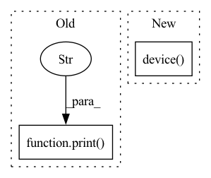

Pattern ID :29161
Before Change
if torch.cuda.device_count() > 1:
print("Found %g GPUs" % torch.cuda.device_count())
print("WARNING Multi-GPU Issue: https://github.com/ultralytics/yolov3/issues/21" )
torch.cuda.set_device(0) // OPTIONAL: Set your GPU if multiple available
// // print("Using ", torch.cuda.device_count(), " GPUs")
print("Using %s %s\n" % (device.type, torch.cuda.get_device_properties(0) if cuda else ""))After Change
device = torch.device("cuda:0" if cuda else "cpu")
if torch.cuda.device_count() > 1:
device = torch.device( "cuda" if cuda else "cpu")
print("Found %g GPUs" % torch.cuda.device_count())
// print("Multi-GPU Issue: https://github.com/ultralytics/yolov3/issues/21")
// torch.cuda.set_device(0) // OPTIONAL: Set your GPU if multiple available
// print("Using ", torch.cuda.device_count(), " GPUs")In pattern: SUPERPATTERN
Frequency: 3
Non-data size: 2
Instances Fragment ID: 85844729
Project Name: nightsnack/yolobile
Commit Name: 45fac6bff10a7c71e9a3d18475ff5ef7246aad14
Time: 2019-03-17
Author: glenn.jocher@ultralytics.com
File Name: utils/torch_utils.py
M Class Name: AnonimousClass
N Class Name: AnonimousClass
M Method Name: select_device(1)
N Method Name: select_device(1)
M Parent Class:
N Parent Class:
M File Name: utils/torch_utils.py
N File Name: utils/torch_utils.py
M Start Line: 20
M End Line: 21
N Start Line: 15
N End Line: 19
Before Change
if mixup_alpha:
label_pipeline.append(MixupToOneHot(1000))
print("DISTRIBUTED LOADER" , distributed)
order = OrderOption.RANDOM if distributed else OrderOption.QUASI_RANDOM
loader = Loader(train_dataset,
batch_size=batch_size,After Change
Convert(ch.float16),
Normalize((IMAGENET_MEAN * 255).tolist(),
(IMAGENET_STD * 255).tolist()),
ToDevice(ch.device( "cuda:0") , non_blocking=True)
])
label_pipeline: List[Operation] = [IntDecoder()] Fragment ID: 85844728
Project Name: libffcv/ffcv
Commit Name: 5e70af233682c808b390f8afc95a69a3b0ca106d
Time: 2022-01-10
Author: engstrom@csail.mit.edu
File Name: examples/train_imagenet.py
M Class Name: ImageNetTrainer
N Class Name: ImageNetTrainer
M Method Name: create_train_loader(9)
N Method Name: create_train_loader(8)
M Parent Class: Trainer
N Parent Class: Trainer
M File Name: examples/train_imagenet.py
N File Name: examples/train_imagenet.py
M Start Line: 178
M End Line: 201
N Start Line: 170
N End Line: 205
Before Change
model = nets_new.CascadedNet(self.mp.param["bins"] * 2, nn_architecture)
inference = self.inference_vr_new
else:
print("OLD: " , nn_architecture)
model = nets.determine_model_capacity(self.mp.param["bins"] * 2, nn_architecture)
inference = self.inference_vr
After Change
self.start_inference()
if self.is_gpu_conversion >= 0:
if OPERATING_SYSTEM == "Darwin":
device = torch.device( "mps" if torch.backends.mps.is_available() else "cpu")
else:
device = torch.device("cuda:0" if torch.cuda.is_available() else "cpu")
else:
Fragment ID: 85844730
Project Name: anjok07/ultimatevocalremovergui
Commit Name: 729f6d67444986fcf5875b48b974aee499ac61f7
Time: 2022-12-27
Author: 68268275+Anjok07@users.noreply.github.com
File Name: separate.py
M Class Name: SeperateVR
N Class Name: SeperateVR
M Method Name: seperate(1)
N Method Name: seperate(1)
M Parent Class: SeperateAttributes
N Parent Class: SeperateAttributes
M File Name: separate.py
N File Name: separate.py
M Start Line: 589
M End Line: 606
N Start Line: 589
N End Line: 593